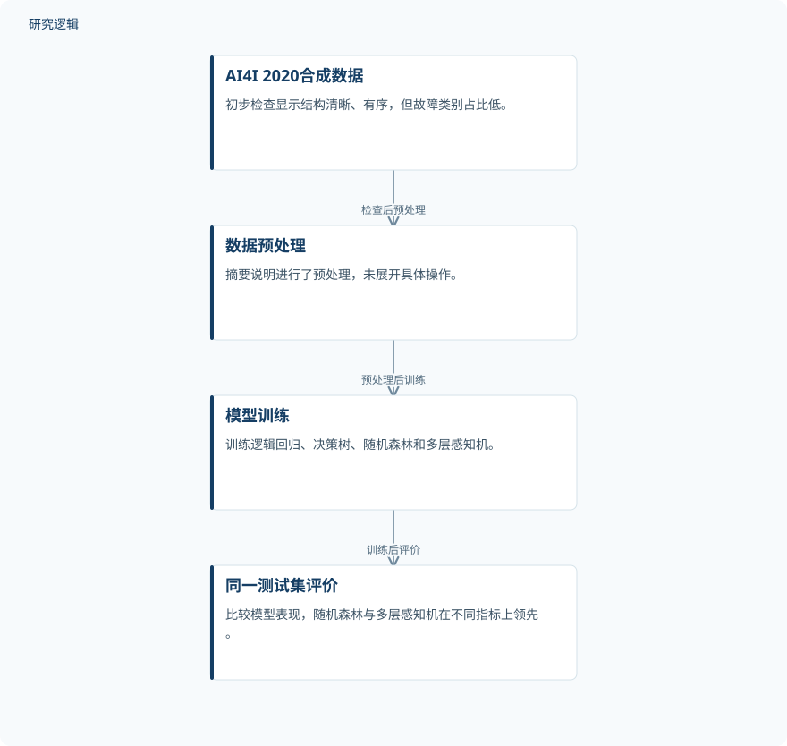

摘要解读
从预防性维护到预测性维护：机器学习模型的应用与比较
From preventive to predictive maintenance : application and comparison of machine learning models
解读更新 2026-11-10 14:07 · 依据公开摘要整理，未核验全文细节
工业设备维护从预防性维护走向预测性维护，模型选择不能只看能找到多少故障，还要考虑误报。本文摘要报告的模型比较，展示了不同评价指标可能指向不同的优选模型，为理解智能运维中的取舍提供了具体案例。
文章目录
从维护策略转向故障识别
研究围绕工业设备维护策略的演进展开，介绍了纠正性维护、预防性维护、基于状态的维护与预测性维护，并讨论运行数据、传感器和状态监测的作用。应用部分则聚焦机器学习识别故障，而非仅停留在维护策略的概念比较。
数据中的故障稀少，是理解这项比较的重要背景。摘要指出，所用数据集结构清晰、有序，但存在明显的类别不平衡：只有3.39%的观测对应故障。
在同一测试集上比较不同模型
研究使用合成数据集AI4I 2020，比较逻辑回归、决策树、随机森林和多层感知机。摘要明确的流程是先进行数据初步检查与预处理，再训练模型，并在同一测试集上评价。预处理的具体操作、模型参数及数据划分方式未在摘要中展开。
依据摘要整理的模型比较流程


仅概括摘要明确陈述的数据处理、模型训练与评价关系，不是论文原图，不表达未报告的实验配置。
下载 SVG图示关系说明
实线表示相邻阶段的信息流，虚线表示跨阶段联系或反馈。
AI4I 2020合成数据 → 数据预处理：检查后预处理；数据预处理 → 模型训练：预处理后训练；模型训练 → 同一测试集评价：训练后评价
随机森林与多层感知机各有所长
随机森林取得了最高的查准率（precision）、F1和PR-AUC；多层感知机则取得最高的召回率和ROC-AUC，并识别出68个实际故障中的61个。摘要没有给出这些指标的完整数值，也未逐项报告逻辑回归和决策树的表现。
这组结果没有指向一个在所有指标上都领先的模型。摘要的总体结论是：预测性维护模型的选择，应同时考虑故障检测能力与误报数量，而不能只依据某一个指标确定优劣。
合成数据上的比较还不能说明什么
本解读仅依据完整摘要，不能据此判断总样本量、训练与测试划分、类别不平衡的处理方式，以及模型差异是否经过重复验证或统计检验。摘要也未交代真实工业设备验证、跨工况适用性或故障提前预警时间，因此不能把这次故障识别比较直接视为现场预测维护效果的验证；这些信息未在摘要报告，不代表论文没有开展相关工作。
阅读启发：先问指标对应哪种维护取舍
阅读启发：进一步阅读时，值得关注作者如何把漏检与误报对应到维护决策，以及不同模型的指标优势是否依赖分类阈值和评价设置。另一项阅读重点，是合成数据上的故障识别结果与实际设备维护之间如何衔接。这些都是当前摘要留下的待核对问题，而非已经得到验证的应用结论。
以上为本站阅读启发与建议，不是论文已验证的结论。